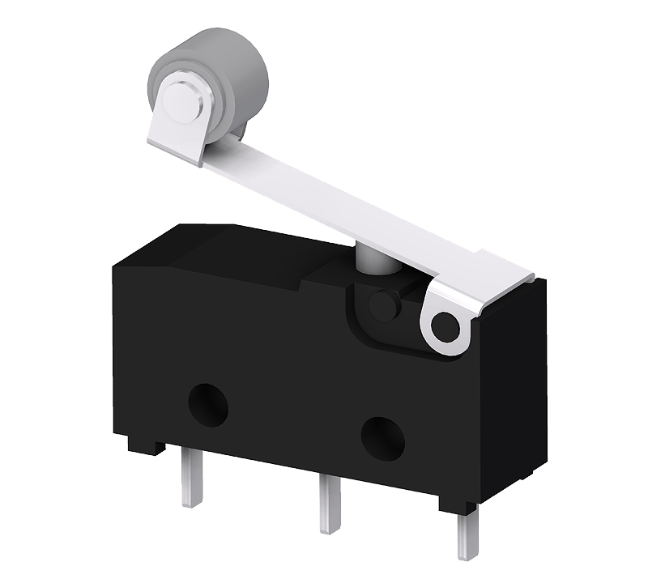

Endlagen
Weghilfsschalter für NK, NL, VK
Zusätzliche Hilfsschalter für Endlagen und Zwischenstellungen. Kontaktmaterial Silber, optionale Goldkontakte, Schalterkontakte auf Klemmen geführt, stufenlose Schaltwinkeleinstellung über Nocken und Wechslerkontakt.
Für Antriebe / Einsatz: NK, NL, VK
Anfragen